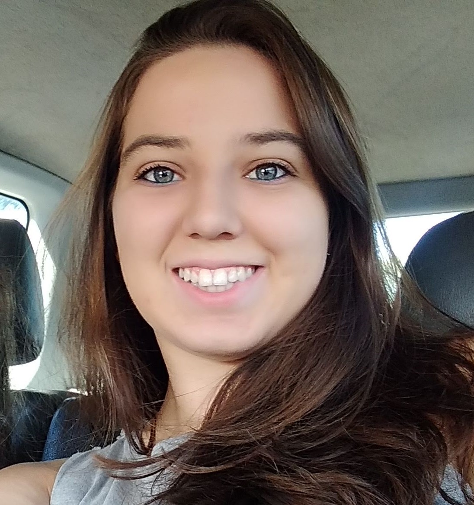

Meu nome é Camila, tenho 22 anos e moro na cidade de Boituva, interior de São Paulo. Sou formada em Tecnologia em Automação Industrial. Gosto muito da área de programação, então decidi explorar algo
um pouco mais diferente como a programação WEB, sendo assim, hoje estou cursando Tecnologia em Análise e Desenvolvimento de Sistemas. Atualmente trabalho em uma metalúrgica, preparando programas para máquinas CNC.
Nos meus tempos livres gosto de ler, assistir filmes e séries. Mas tem outra atividade que gosto muito, que é montar quebra-cabeça. Desde criança já "brincava" com eles. Essa atividade é boa para manter a mente ocupa e exercitá-la. Nas próximas páginas falarei um pouco de um quebra-cabeça que montei e acabei o emoldurando.
Na seção MEU HOBBY, em QUEBRA-CABEÇA falo um pouco sobre esse passatempo e mostro como ficou o qual montei.
Na seção MEU HOBBY, em COMO FAZER mostro como foi o processo de montagem do quebra cabeça e como colocá-lo em uma moldura.
Na seção CONTATO, se quiser entrar em contato comigo, deixe sua mensagem!